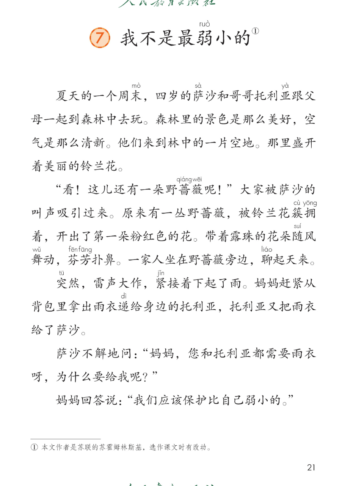
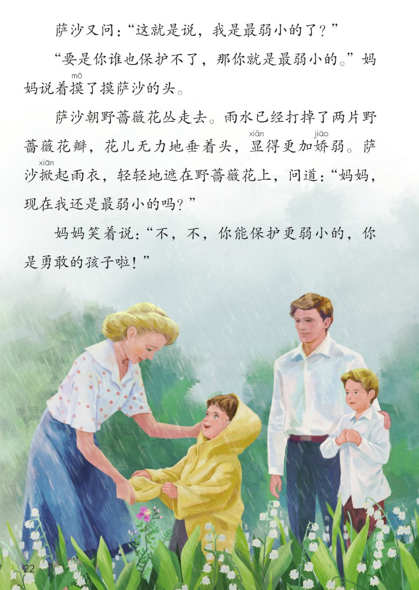
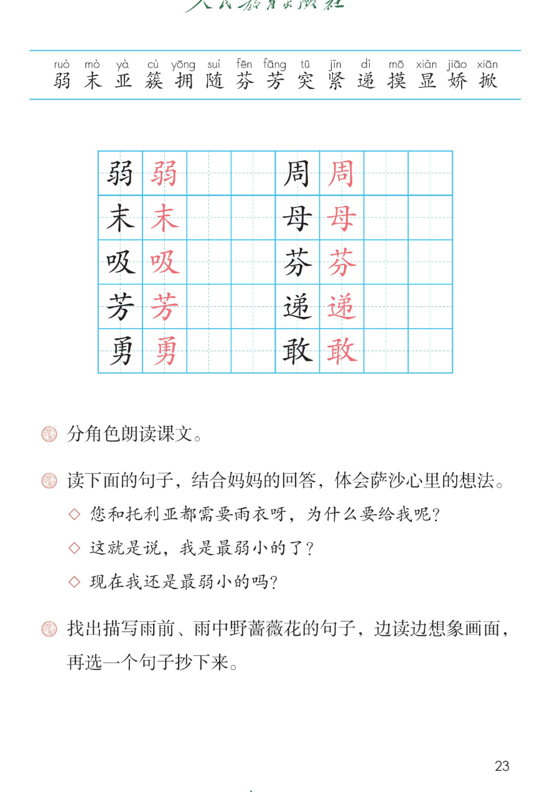

×
🔊 手机听不到声音怎么办？
① 先把手机
媒体音量调大 ，确认没开静音、没连蓝牙耳机；在微信里打开的，点右上角「⋯ → 用浏览器打开」。
② 还是没声音？到应用商店免费下载
Microsoft Edge 浏览器 （它自带朗读发声），用它打开本页面就能出声。
③ 换了 Edge 仍然没声音，说明这部手机的
硬件/系统不支持 网页朗读（多为老旧机型）；近几年买的新手机一般都能正常播放。
→ 打开声音自检
☔ 第 7 课《我不是最弱小的》· 有声图文带读
语文 · 第二单元·阅读 · 课本 第 21~23 页 · 一篇雨中的对话故事
课文 9 段 · 18 句
会认字 15
会写字 10
听写词 10
近义词 4 组
深入理解 8 题
本课本领 分角色朗读·体会萨沙心里的想法
🎧 五步学（可随时点任意一句、一个字、一个词单独听）： ① 听读课文 ——9 个自然段、18 句，一句一句读，读到哪句哪句发光；开「跟读」后读完一句留时间自己读。② 学字词 ——15 个会认字、10 个会写字（含书写提示），点一个读一个。③ 词语·听写·造句 ——读课本第 23 页三道课后题和三个句子，听写 10 个词，再听 4 组近义词辨析。 ④ 深入理解 ——8 道题（认知 / 理解 / 运用 / 拓展），开放题答案不唯一，先想后看。⑤ 说经过·分角色 ——按顺序说说雨衣怎样一路传下去；再按课后题①分角色朗读全课。
📚 本册第二单元·阅读（照课本目录）： 5 雷锋叔叔，你在哪里 → 6 千人糕前后连起来看：帮助别人 → 珍惜别人的劳动 → 保护比自己更弱小的
📖 课文出处（课本第 21 页照录） ：① 本文作者是苏联的苏霍姆林斯基，课题「我不是最弱小的」的弱字上方注音 ruò ，右上角标 ①
点段前的 ①~⑨ 听整段
🔁 跟读模式：关
👁 隐藏注音（自测用）
注音只标本课要认、要写的字和课本明确标了音的字，读音照课本第 21~23 页，每个字只注一次
🎤 朗读要求 · 分角色朗读课文（课后题①的老师标准） 读准字音 ：弱 ruò 、末 mò 、萨 sà 、亚 yà 、簇拥 cù yōng 、随 suí 、芬芳 fēn fāng 、突 tū 、紧 jǐn 、递 dì 、摸 mō 、显 xiǎn 、娇 jiāo 、掀 xiān 、勇敢 yǒng gǎn （照课本第 21~23 页）；分角色 ：旁白把事情说清楚；萨沙只有四岁，声音清脆；妈妈温和、有耐心；三个问句 （课后题②）：第一句不解 → 第二句有点不服气 → 第三句自豪、等妈妈回答 ，问句末尾都上扬 ；标点 ：逗号停得短，句号、问号、感叹号停得长；感叹号处读出发现花、夸奖时的心情；雨前与雨中 ：雨前的花轻快、香；雨中的花慢而轻、无力，两句要读出不一样 。
①
夏天的一个周zhōu 末mò ，四岁的萨sà 沙和哥哥托利亚yà 跟父母mǔ 一起到森林中去玩。
森林里的景色是那么美好，空气是那么清新。
他们来到林中的一片空地。
那里盛开着美丽的铃兰花。
②
“看！这儿还有一朵野蔷qiáng 薇wēi 呢！”大家被萨沙的叫声吸xī 引过来。
原来有一丛野蔷薇，被铃兰花簇cù 拥yōng 着，开出了第一朵粉红色的花。
带着露珠的花朵随suí 风舞wǔ 动，芬fēn 芳fāng 扑鼻。
一家人坐在野蔷薇旁边，聊liáo 起天来。
③
突tū 然，雷声大作，紧jǐn 接着下起了雨。妈妈赶紧从背包里拿出雨衣递dì 给身边的托利亚，托利亚又把雨衣给了萨沙。
④
萨沙不解地问：“妈妈，您和托利亚都需要雨衣呀，为什么要给我呢？”
⑤
妈妈回答说：“我们应该保护比自己弱ruò 小的。”
⑥
萨沙又问：“这就是说，我是最弱小的了？”
⑦
“要是你谁也保护不了，那你就是最弱小的。”妈妈说着摸mō 了摸萨沙的头。
⑧
萨沙朝野蔷薇花丛走去。
雨水已经打掉了两片野蔷薇花瓣，花儿无力地垂着头，显xiǎn 得更加娇jiāo 弱。
萨沙掀xiān 起雨衣，轻轻地遮在野蔷薇花上，问道：“妈妈，现在我还是最弱小的吗？”
⑨
妈妈笑着说：“不，不，你能保护更弱小的，你是勇yǒng 敢gǎn 的孩子啦！”
🤔 想一想（点我可跳过）
点一张图，听读整页

第 21 页 · 课题、前 5 段与脚注

第 22 页 · 后 4 段与雨中遮花

第 23 页 · 生字表与课后题
📖 人教版《语文》二年级下册 · 课本第 21~23 页 · 图片仅供个人学习，版权归人民教育出版社所有
点一个字，听读音、词语和课文里的句子；照课本第 23 页生字表顺序，全部黑字、没有蓝色多音字
结构、部首、笔画与书写提示为通用规范，供参考，以教材和字典为准
弱
ruò
弱小 · 软弱
10 画 · 左右（弓）
两个弓左小右大，四点位置匀称
周
zhōu
周末 · 四周
8 画 · 半包围（冂）
外框写正，里面土与口上下对齐
末
mò
周末 · 末尾
5 画 · 独体（木）
上横长下横短，竖居中，撇捺舒展
母
mǔ
父母 · 母亲
5 画 · 独体（母）
竖折的折要平，两点均匀，长横托住
吸
xī
吸引 · 呼吸
6 画 · 左右（口）
口小而靠上，及的撇捺舒展
芬
fēn
芬芳 · 清芬
7 画 · 上下（艹）
草字头写宽，下面的分撇捺分开
芳
fāng
芬芳 · 芳香
7 画 · 上下（艹）
草字头盖住下方，方的横折钩要正
递
dì
递给 · 传递
10 画 · 半包围（辶）
里面弟写紧凑，走之底的捺平而长
勇
yǒng
勇敢 · 勇气
9 画 · 上下（力）
上面写紧凑，下面的力撇舒展
敢
gǎn
勇敢 · 敢说
11 画 · 左右（攵）
左边写窄，右边反文旁撇捺舒展
点一行，听题目和这一句
📖 课后题（课本第 23 页照录） ：下面 7 行是三道课后题、三个句子和从课文里找出来的两句（供参考）。
课后题 ① 分角色朗读课文。
课后题 ② 读下面的句子，结合妈妈的回答，体会萨沙心里的想法。
句子 一 您和托利亚都需要雨衣呀，为什么要给我呢？
句子 二 这就是说，我是最弱小的了？
句子 三 现在我还是最弱小的吗？
课后题 ③ 找出描写雨前、雨中野蔷薇花的句子，边读边想象画面，再选一个句子抄下来。
抄一抄 雨前：原来有一丛野蔷薇，被铃兰花簇拥着，开出了第一朵粉红色的花。
读两遍 → 你在纸上写 → 报答案 → 听示范句
准备听写 · 共 10 个词
○ ○ ○
点下面的「开始听写」，听到一个词就写一个词。
▶ 开始听写
🔁 再读一遍
👁 看答案
点词听读，点句子听示范句，再自己说一句
1 弱小 会写字 · 弱
示范句：我们应该保护比自己弱小的。
✏️ 我也能说：保护 + 谁
2 周末 会写字 · 周、末
示范句：夏天的一个周末，我们一家去森林里玩。
✏️ 我也能说：什么时候做什么
3 父母 会写字 · 母
示范句：萨沙和哥哥跟父母一起到森林中去玩。
✏️ 我也能说：跟父母一起
4 吸引 会写字 · 吸
示范句：大家被萨沙的叫声吸引过来。
✏️ 我也能说：被什么吸引
5 芬芳 会写字 · 芬、芳
示范句：带着露珠的花朵随风舞动，芬芳扑鼻。
✏️ 我也能说：什么花香
6 递给 会写字 · 递
示范句：妈妈赶紧从背包里拿出雨衣递给身边的托利亚。
✏️ 我也能说：递给 + 谁
7 勇敢 会写字 · 勇、敢
示范句：你是勇敢的孩子啦！
✏️ 我也能说：夸一夸谁
8 雨衣 课文核心词
示范句：托利亚又把雨衣给了萨沙。
✏️ 我也能说：把什么给谁
9 野蔷薇 课后题③核心词
示范句：萨沙把雨衣轻轻地遮在野蔷薇花上。
✏️ 我也能说：把什么遮在哪儿
10 保护 课文核心词
示范句：你能保护更弱小的。
✏️ 我也能说：能保护什么
相同点 / 不一样在哪 / 各造一句
弱小 — 娇弱
相同：都写不强壮、需要人保护 。
不一样：弱小 多说人和动物年纪小、力气小，课文里妈妈说，我们应该保护比自己弱小的；娇弱 多说花草被雨打过以后的样子，课文里写雨中的野蔷薇显得更加娇弱。
弱小：我们应该保护比自己弱小的。
赶紧 — 连忙
相同：都写动作快、一点不耽搁 。
不一样：赶紧 是课文里的原词，妈妈赶紧从背包里拿出雨衣，写的是雨一来马上就做；连忙 意思一样，说话里更常用，后面也常接一连串动作。
赶紧：妈妈赶紧从背包里拿出雨衣。
美好 — 美丽
相同：都写好看、让人喜欢 。
不一样：美好 写的是整个景色给人的感觉，课文里写森林里的景色是那么美好；美丽 多写看得见的样子，课文里写那里盛开着美丽的铃兰花。
美好：森林里的景色是那么美好。
保护 — 爱护
相同：都写不让它受伤害 。
不一样：保护 是课文里的原词，妈妈说要保护比自己弱小的，萨沙用雨衣遮住野蔷薇花，就是真的护住了它；爱护 多一层平日里用心对待、珍惜的意思，常说爱护花草、爱护书本。
保护：萨沙把雨衣遮在野蔷薇花上，保护了它。
那么…那么… 森林里的景色是那么美好，
更加 花儿无力地垂着头，
三个问句 为什么要给我呢？
动作连着做 拿出雨衣递给托利亚，
标「答案不唯一」的题，说得有道理都对
认知 一家人在森林里看到了哪两种花？雨衣又是怎样传到萨沙手里的？看解析
🤔 想一想
解析：
铃兰花盛开着，野蔷薇刚开出第一朵粉红色的花。
妈妈递给托利亚，托利亚又给了萨沙。
每传一次，都是把雨衣给更需要的人。
认知 课后题③：描写雨前、雨中野蔷薇花的句子分别是哪几句？看解析
🤔 想一想
解析：
簇拥着、开出第一朵粉红色的花、随风舞动、芬芳扑鼻。
打掉了两片花瓣、无力地垂着头、显得更加娇弱。
一句精神，一句没力气，正好相反。
理解 课后题②：三句话里萨沙心里的想法有什么变化？结合妈妈的回答说说。看解析
🤔 想一想
解析：
妈妈答：我们应该保护比自己弱小的。
妈妈答：要是你谁也保护不了，那你就是最弱小的。
妈妈笑着说：你能保护更弱小的，你是勇敢的孩子啦。
从被保护，到自己也能保护别人。
理解 课题叫「我不是最弱小的」。这句话是谁想说的？他用什么证明的？看解析
🤔 想一想
解析：
四岁的萨沙，全家最小的一个。
掀起雨衣，轻轻地遮在野蔷薇花上。
他找到了比自己更弱小的，并且护住了它。
理解 雨衣从妈妈传到托利亚、萨沙，最后遮在野蔷薇花上，这样写说明了什么？看解析
🤔 想一想
解析：
递给 → 又给了 → 掀起、遮在。
一次比一次给更需要保护的那一个。
妈妈夸他是勇敢的孩子啦。
运用 照课文的样子，用「那么…那么…」或「更加」说一句雨前、雨后的景物。看解析
🤔 想一想
解析：
那么什么那么什么，或者更加。
雨前、雨中、雨后都可以。
颜色、姿态、气味，选一样写具体。
🌈 答案不唯一，说得有道理都对
运用 课后题①：分角色朗读课文。萨沙的三个问句该怎么读才读出心里的想法？看解析
🤔 想一想
解析：
旁白、萨沙、妈妈，托利亚没有台词。
不解 → 不服气 → 自豪、期待。
句尾稍稍扬起来，不要读成陈述句。
🌈 答案不唯一，说得有道理都对
拓展 生活里你保护过比自己弱小的什么？你想对萨沙说一句什么话？看解析
🤔 想一想
解析：
花草、小动物、小弟弟小妹妹都可以。
一个动作接一个动作，像课文那样说。
夸萨沙，也说说自己当时的心情。
🌈 答案不唯一，说得有道理都对
点一步，听这一步
1
先 · 森林里看花
2
再 · 下雨传雨衣
3
接着 · 萨沙三次发问
4
然后 · 雨衣遮住花
5
最后 · 勇敢的孩子
💬 课后题①照录 ：分角色朗读课文。先 说森林里看花 → 再 说下雨、雨衣一路传下去 → 接着 说萨沙三问、妈妈三答 → 然后 说掀起雨衣遮住野蔷薇花 → 最后 说妈妈夸他是勇敢的孩子啦。
课后题①：点一张卡，听这一位读的那几句
📖 旁白·去森林
夏天的一个周末，一家人到森林里去；景色那么美好，空气那么清新。
💬 开场读得平稳、舒展
🌳 旁白·林中空地
来到林中的一片空地，那里盛开着美丽的铃兰花。
💬 两句短句，给看花留停顿
❗ 萨沙·发现花
看！这儿还有一朵野蔷薇呢！大家被萨沙的叫声吸引过来。
💬 惊喜、短促 ，读出发现
🌸 旁白·雨前的花
开出第一朵粉红色的花，随风舞动，芬芳扑鼻，一家人聊起天来。
💬 轻快、香，读得亮一点
⚡ 旁白·打雷下雨
突然，雷声大作，紧接着下起了雨。
💬 突然读得又快又重
🧥 旁白·传雨衣
妈妈递给托利亚，托利亚又把雨衣给了萨沙。
💬 拿出、递给、给了，动作一个不漏
❓ 萨沙·不解
您和托利亚都需要雨衣呀，为什么要给我呢？
💬 第一个问句，想不明白
🤱 妈妈·该保护
我们应该保护比自己弱小的。
💬 温和、肯定
💭 萨沙·又问
这就是说，我是最弱小的了？
💬 第二个问句，有点不服气
✋ 妈妈·摸摸头
要是你谁也保护不了，那你就是最弱小的。妈妈说着摸了摸萨沙的头。
💬 耐心，把话头转一转
☔ 萨沙·遮野蔷薇
雨中的花更加娇弱；萨沙掀起雨衣，轻轻地遮在花上，问现在我还是最弱小的吗。
💬 先慢后轻，第三问带自豪
🌻 妈妈·笑着夸
不，不，你能保护更弱小的，你是勇敢的孩子啦！
💬 两个不连读，又急又高兴